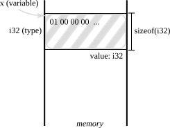
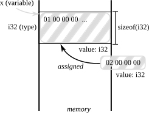

Variable and type

Taesoo Kim
Taesoo Kim
Is an OS made in Rust still susceptible to as many CVEs as an OS made in C or C++? If not, what is the tradeoff (lines of code, performance e.g. HLL tax, etc.) to make it safer?


cargo asm --rust)x @rsp, y @rsp+40x @rsp)x at @rsp)drop() frees the memory that the variable is in charge of
std::marker::Copy (copy semantics)let x = String::from("Hello");
// => String::len(&x) -> usize
let y = x.len();
// x is still accessible!
dbg!(x);Note. . has lots of magic behind the scene (see, Nomicon 4.3 The Dot Operator)
?Sized or DST)
T) is only referred via a reference (&T)String for str)